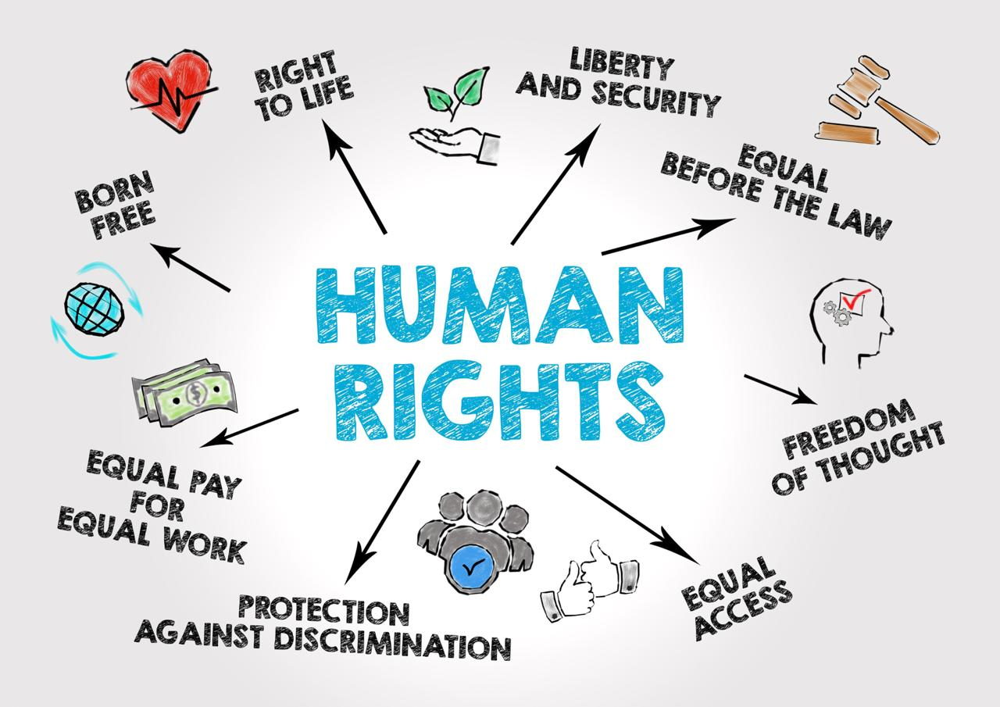
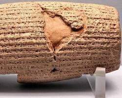
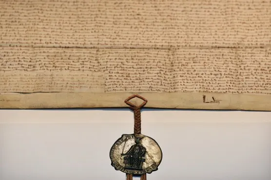
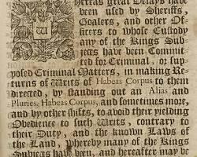

Lecture 1 — The Essence of Human Rights (Definition & Foundation)
Overview: Human rights are inalienable and universal; dignity is their philosophical root.
Definition & Foundation
Definition: Human rights are basic, inalienable rights each person has by virtue of being human.
Core examples: right to life; liberty and security; freedom of thought and expression; equality before the law.
Philosophical basis: dignity — every person as moral and rational.
Universality: rights apply to all humans regardless of status.

Concrete modern examples
Arbitrary detention: When states detain people without charge or trial, the rights to liberty and due process are violated.
Freedom of expression cases: Social-media bans, criminal defamation laws, or censorship show tensions between state power and Article 19-style protections.
Quick quiz
Lecture 2 — Historical Milestones in Human Rights Development
Ancient and medieval milestones that fed into modern human-rights language.
The Cyrus Cylinder (539 B.C.)
After conquering Babylon, Cyrus II issued decrees recorded on a baked-clay cylinder
that included freeing certain captive peoples and permitting religious practice. Often viewed as an early charter of human protections


The Magna Carta (1215)
King John forced to accept limits on royal power. Established early principles: limits on taxation, property rights, the beginnings of due process, and protections against arbitrary punishment. Seeds of equality before the law and procedural rights.
Tie-ins to Modern Rights
Connect each milestone to UDHR themes: religious freedom; due process; equality before the law.
Quick quiz
Lecture 3 — Other Important Historical Instruments
Early-modern legal documents and constitutional developments that shaped civil liberties.
Petition of Right (1628)
No taxation without Parliament.
No imprisonment without cause shown (habeas corpus reaffirmed).
No quartering of soldiers.
No use of martial law in peacetime.
Habeas Corpus — development
Judicial mechanism requiring authorities to justify detention;
central to protecting liberty and preventing arbitrary detention.
English Bill of Rights (1689)
Following the Glorious Revolution, it limited monarchic power and
affirmed certain parliamentary and civil protections — an early constitutional rights document.
U.S. Bill of Rights (1791) — influence
Provided explicit constitutional guarantees (speech, religion, fair trial)
that became a model for later rights protections internationally.
Tie-ins to UDHR
Habeas corpus & Petition of Right → protections against arbitrary detention (Article 9 analog).
Constitutional bills → freedom of expression, religion, fair trial (Articles 19, 18, and 10–11 analogs).
Quick quiz
Lecture 4 — The Universal Declaration of Human Rights (UDHR)
Adoption, key articles, legal status, and implementation challenges.
Adoption
Adopted and proclaimed by the UN General Assembly on 10 December 1948.
The UDHR is a foundational declaration that set international standards
(it is not itself a treaty but inspired binding instruments).
Core Message(opening paragraph)
Recognition of the inherent dignity and of the equal and inalienable rights of:
all members of the human family is
the foundation of freedom, justice and peace in the world.
Selected Articles
Article 1: Born free and equal in dignity and rights.
Article 3: Right to life, liberty and security of person.
Article 5: No torture or cruel, inhuman, degrading treatment.
Article 19: Freedom of opinion and expression.

Implementation & The Challenge
UDHR inspired binding treaties (e.g., ICCPR, ICESCR) and national constitutions,
but enforcement is uneven. Implementation requires